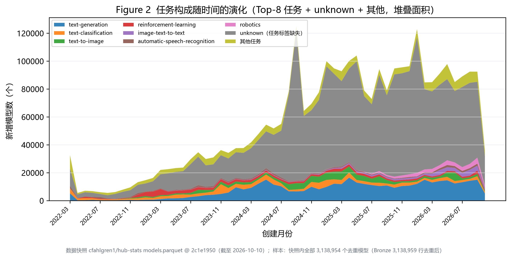
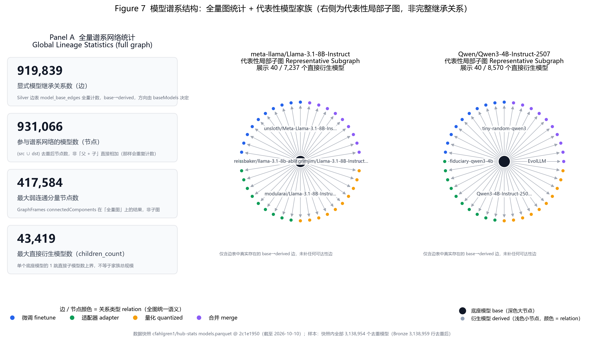
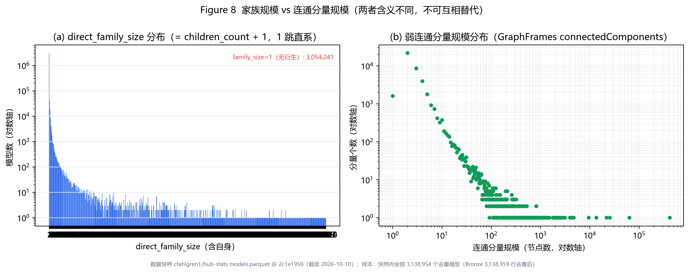
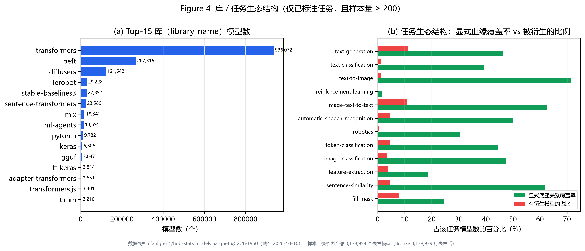
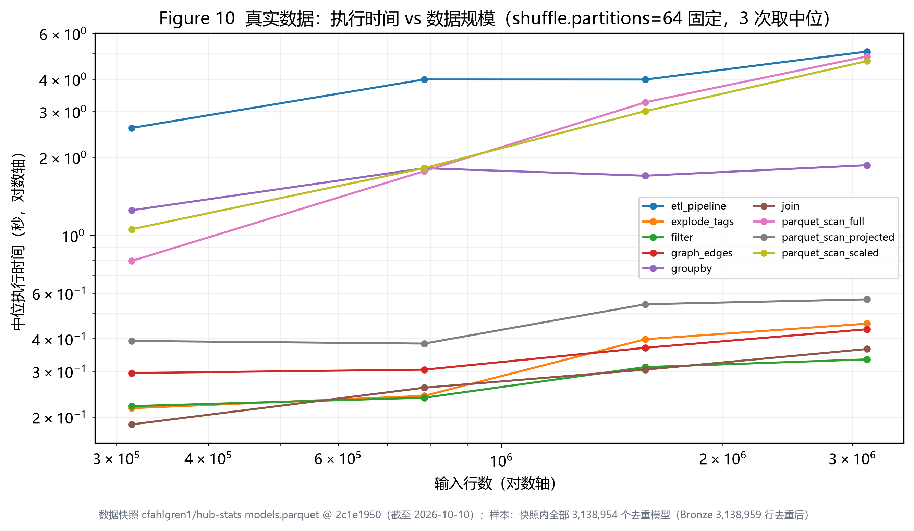

概览
数据集与快照
下载量集中度（downloads = 近 30 天口径）
模型谱系结构
任务标签与实验环境
pipeline_tag 缺失率 65.55%，
缺失记为 unknown 单独报告，不被当作一个任务类别，所有按任务的结论只覆盖已标注部分。RQ1 · 生态演化
研究对象是「快照中仍可见模型的创建时间分布」，不是历史上所有曾发布模型的完整记录。 峰值月 2024-09（125,030 个）；2026-10 为快照截止月，尚未走完，不与完整月份直接比较。
2022-03 存在时间戳异常聚集：约 90.66% 的模型挤在
2022-03-02 一天，而该日只有 5 个不同时间戳。
这是已观测到的现象；根因未确认（平台元数据迁移 / 时间戳记录下限等解释均缺可核验证据），
故不作因果推断，也不当作自然发布高峰。RQ2 · 注意力集中与长尾
| 口径 | Gini | Top-1% | Top-5% | Top-10% | 零值占比 |
|---|---|---|---|---|---|
| downloads | 0.995355 | 97.13% | 99.09% | 99.48% | 43.54% |
| downloadsAllTime | 0.998117 | 98.70% | 99.65% | 99.84% | 41.98% |
Gini 由频数加权秩公式精确计算（非采样近似）；Top-p 份额按值降序取前
max(1, int(n·p)) 个，并列值整体同权。只描述长尾形态，
未做严格幂律拟合与模型比较，因此不宣称幂律分布。
RQ3 · 模型谱系网络
| 指标 | 数值 |
|---|---|
| 血缘边数 | 919,839 |
| 不同底座（父）模型 | 88,333 |
| 不同衍生（子）模型 | 887,032 |
| 参与血缘的模型（并集去重） | 931,066 |
| 既是底座又是衍生的模型 | 44,299 |
| 外部父模型边（快照外引用，已保留） | 14,838（1.61%） |
| 最大直接衍生数（children_count） | 43,419 |
| 最大 ≤3 跳可达后代数 | 43,682 |
| 最大弱连通分量规模（GraphFrames，全量图） | 417,584 |
| GraphFrames 状态 | completed |
边语义固定为 src = 底座 → dst = 衍生模型，方向不可反转。
四类规模指标含义不同、禁止互相替代：children_count（出度）/
direct_family_size（= children_count + 1，1 跳直系）/
descendant_count_khop（≤3 跳有界可达，是下界）/
component_size（弱连通分量，跨多跳）。PageRank 不等于模型质量。
Figure 7 右侧为代表性局部子图，不可解释为完整弱连通分量。
RQ4 · 属性与下载热度的统计关联
| 模型 | RMSE | MAE | R² |
|---|---|---|---|
| Baseline_mean | 1.7467 | 1.4033 | -0.0000 |
| LinearRegression | 1.3328 | 0.9501 | 0.4177 |
| RandomForest | 1.0139 | 0.5876 | 0.6631 |
| GBT | 1.0606 | 0.6239 | 0.6313 |
目标 y = log(1+downloads)；先划分后拟合，预处理只在训练集上 fit， 指标只在独立测试集上计算。likes 与 downloads 同取自一个快照，存在同期相关， 不能解释为前瞻性预测能力；特征重要性也不代表因果或模型质量。
RQ5 · 任务生态对比（仅已标注任务，样本量 ≥ 200）
| 任务 | 模型数 | 总下载(downloads) | 中位下载 | Gini(downloads) | Top-10% 份额 | 底座关系覆盖率 |
|---|---|---|---|---|---|---|
| text-generation | 422,224 | 500,535,196 | 16 | 0.9844 | 98.43% | 46.38% |
| text-classification | 123,924 | 67,458,349 | 7 | 0.9889 | 98.83% | 39.19% |
| text-to-image | 111,444 | 35,835,009 | 6 | 0.9827 | 97.89% | 71.34% |
| reinforcement-learning | 78,390 | 1,074,550 | 0 | 0.9220 | 84.67% | 1.73% |
| image-text-to-text | 41,815 | 299,808,409 | 17 | 0.9904 | 99.35% | 62.57% |
| automatic-speech-recognition | 37,438 | 157,562,969 | 8 | 0.9963 | 99.81% | 49.99% |
| robotics | 35,285 | 1,468,073 | 9 | 0.8537 | 82.58% | 30.48% |
| token-classification | 30,975 | 54,557,292 | 8 | 0.9851 | 99.56% | 44.33% |
| image-classification | 29,681 | 68,493,859 | 8 | 0.9948 | 99.65% | 47.42% |
| feature-extraction | 21,485 | 163,161,230 | 10 | 0.9967 | 99.80% | 18.76% |
下载量口径为 downloads（近 30 天）；unknown 与样本不足的任务组已剔除， 不参与比较。表中「底座关系覆盖率」指该任务下显式声明血缘的模型占比。
Spark 扩展性实验（真实数据）
| 规模 | 行数 | 算子 | 分区数 | 中位耗时(s) | CPU/run 时间(ms) | shuffle 读(MiB) |
|---|---|---|---|---|---|---|
| real_10pct | 314,455 | etl_pipeline | 64 | 2.592 | 10989 | 7.3 |
| real_10pct | 314,455 | explode_tags | 64 | 0.216 | 522 | 0.0 |
| real_10pct | 314,455 | filter | 64 | 0.220 | 493 | 0.0 |
| real_10pct | 314,455 | graph_edges | 64 | 0.295 | 577 | 0.0 |
| real_10pct | 314,455 | groupby | 64 | 1.249 | 4869 | 0.0 |
| real_10pct | 314,455 | join | 64 | 0.187 | 475 | 0.0 |
| real_10pct | 314,455 | parquet_scan_full | 64 | 0.797 | 2719 | 0.0 |
| real_10pct | 314,455 | parquet_scan_projected | 64 | 0.392 | 793 | 0.0 |
| real_10pct | 314,455 | parquet_scan_scaled | 64 | 1.056 | 3534 | 0.0 |
| real_25pct | 785,597 | etl_pipeline | 64 | 3.986 | 15492 | 13.6 |
| real_25pct | 785,597 | explode_tags | 64 | 0.241 | 674 | 0.0 |
| real_25pct | 785,597 | filter | 64 | 0.237 | 607 | 0.0 |
| real_25pct | 785,597 | graph_edges | 64 | 0.304 | 596 | 0.0 |
| real_25pct | 785,597 | groupby | 64 | 1.814 | 7251 | 0.0 |
| real_25pct | 785,597 | join | 64 | 0.259 | 606 | 0.0 |
| real_25pct | 785,597 | parquet_scan_full | 64 | 1.767 | 6414 | 0.0 |
| real_25pct | 785,597 | parquet_scan_projected | 64 | 0.383 | 1007 | 0.0 |
| real_25pct | 785,597 | parquet_scan_scaled | 64 | 1.816 | 6755 | 0.0 |
| real_50pct | 1,569,149 | etl_pipeline | 64 | 3.983 | 19536 | 21.2 |
| real_50pct | 1,569,149 | explode_tags | 64 | 0.398 | 1436 | 0.0 |
| real_50pct | 1,569,149 | filter | 64 | 0.311 | 855 | 0.0 |
| real_50pct | 1,569,149 | graph_edges | 64 | 0.369 | 1007 | 0.0 |
| real_50pct | 1,569,149 | groupby | 64 | 1.697 | 7968 | 0.0 |
| real_50pct | 1,569,149 | join | 64 | 0.304 | 781 | 0.0 |
| real_50pct | 1,569,149 | parquet_scan_full | 64 | 3.256 | 12822 | 0.0 |
| real_50pct | 1,569,149 | parquet_scan_projected | 64 | 0.543 | 1546 | 0.0 |
| real_50pct | 1,569,149 | parquet_scan_scaled | 64 | 3.010 | 12118 | 0.0 |
| real_100pct | 3,138,959 | etl_pipeline | 16 | 2.558 | 11944 | 31.8 |
| real_100pct | 3,138,959 | etl_pipeline | 32 | 3.064 | 14908 | 32.6 |
| real_100pct | 3,138,959 | etl_pipeline | 64 | 5.105 | 22801 | 33.2 |
| real_100pct | 3,138,959 | explode_tags | 16 | 0.489 | 1809 | 0.0 |
| real_100pct | 3,138,959 | explode_tags | 32 | 0.459 | 1764 | 0.0 |
| real_100pct | 3,138,959 | explode_tags | 64 | 0.457 | 1730 | 0.0 |
| real_100pct | 3,138,959 | filter | 64 | 0.333 | 1053 | 0.0 |
| real_100pct | 3,138,959 | graph_edges | 16 | 0.447 | 1158 | 0.0 |
| real_100pct | 3,138,959 | graph_edges | 32 | 0.416 | 1145 | 0.0 |
| real_100pct | 3,138,959 | graph_edges | 64 | 0.435 | 1161 | 0.0 |
| real_100pct | 3,138,959 | groupby | 16 | 0.853 | 3426 | 0.0 |
| real_100pct | 3,138,959 | groupby | 32 | 1.225 | 5047 | 0.0 |
| real_100pct | 3,138,959 | groupby | 64 | 1.863 | 7872 | 0.0 |
| real_100pct | 3,138,959 | join | 16 | 0.327 | 921 | 0.0 |
| real_100pct | 3,138,959 | join | 32 | 0.316 | 965 | 0.0 |
| real_100pct | 3,138,959 | join | 64 | 0.365 | 985 | 0.0 |
| real_cold_touch | 3,138,959 | parquet_scan_first_touch | 64 | 4.693 | 22480 | 0.0 |
| real_100pct | 3,138,959 | parquet_scan_full | 64 | 4.891 | 22458 | 0.0 |
| real_100pct | 3,138,959 | parquet_scan_projected | 64 | 0.567 | 2115 | 0.0 |
| real_100pct | 3,138,959 | parquet_scan_scaled | 64 | 4.691 | 20638 | 0.0 |
全部实验在 local[N] 单机多核上完成，
不构成多节点横向扩展结论。Windows 无法清 OS 文件缓存，除首次接触外扫描计时均为缓存热态；
列裁剪实验使用不可下推的 count(每列)，以避开 Parquet 统计下推造成的测量偏差。
内存压力行已单独成组，不与正常测量混算中位数。
全部正式图表（Figure 1–12，按研究问题分组）
RQ1 · 生态演化



RQ2 · 注意力集中与长尾


RQ3 · 模型谱系网络


RQ4 · 属性与下载热度的统计关联

RQ5 · 任务生态对比

Spark 扩展性实验（真实数据）



每张图同时提供 PNG（300 dpi）/ PDF / SVG，矢量版适合 LaTeX 插入。
图目录（编号 / 标题 / 数据源 / 口径）见 data_hubstats/gold/analysis/figure_index.json。
旧版 Figure 7（最大弱连通分量 Top-1500 力导向网络）作为补充材料保留在
figures_supplementary/：节点过密、无分类着色，缩小后不可读，故不作为正式图。
模型家族探索器（交互式）
在有界本地数据集（Top-N 家族，节点数与展开深度均设上限）上交互浏览模型继承网络：
搜索并选择底座模型、按需展开 1 跳 / 2 跳、按 Finetune / Adapter / Quantized / Merge 筛选边、
点击节点查看名称 / 任务 / 下载量 / 创建时间及关系类型、支持拖拽缩放与重置视图。
这是代表性局部子图，不是全量网络；结论限定在显式继承关系内。
打开同目录下的 family_explorer.html（ECharts 已内嵌，离线可用）。
口径与限制（易混淆项）
| 易混淆的两侧 | 正确表述 |
|---|---|
| 下载热度 / 模型质量 | 下载量只反映传播热度，不等于质量 |
| PageRank / 模型质量 | 只反映图结构中的被引用强度，不等于质量 |
| 同期统计关联 / 前瞻性预测 | RQ4 是同一快照内的同期关联，不是预测 |
| 快照创建时间分布 / 历史完整发布记录 | 只含当前仍可见模型，不是全部历史 |
| 任务标签缺失 / 已标注任务 | unknown 不是一个任务类别，不计入按任务结论 |
| children_count / direct_family_size | 后者 = 前者 + 1（含自身），均为 1 跳直系 |
| component_size / 家族规模 | 弱连通分量跨多跳，不等于 1 跳家族规模 |
| descendant_count_khop / 全量后代 | 只统计 ≤3 跳，是下界 |
| maintenance_span_days / 更新频率 | lastModified − createdAt 是维护跨度，不是更新频率 |
| 本地单机 / 多节点集群 | local[N] 单机多核，不构成横向扩展结论 |